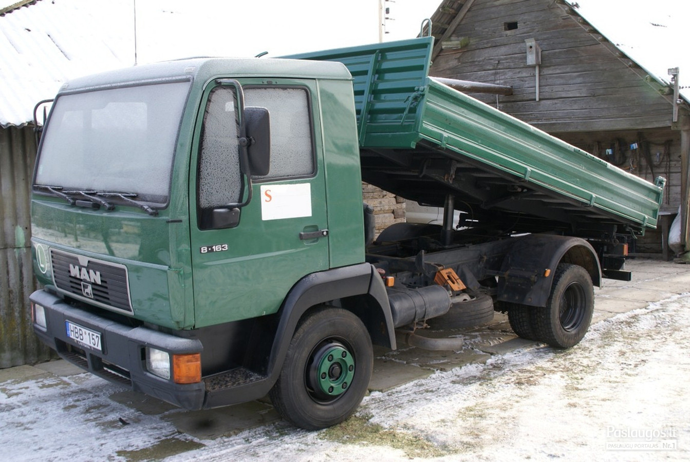

Statybinės Medžiagos! Tiems Kūriems Rūpi Namai - Statau Namą Pats
2020.10.27 07:28
Skip to content +370 669 94 999 info@stataunamapats.lt
Statau Namą Pats
Statybinės Medžiagos Internetu, gaukite tą pačią dieną.
0 0 Suma 0.00 € 0 items VIEW CART;Prekių katalogas Pamatai Liktiniai Klojiniai Sraigtiniai Pamatai Šiltinimo Medžiagos Polistireninis Putplastis Mineralinė ir Akmens vata Statybinės Plokštės Gipso kartonas ir profiliai OSB plokštės Statybiniai Mišiniai Glaistai Tinkai Santechnika ir Šildymas Lauko Kanalizacija Vidaus Kanalizacija Pagrindinis Apmokėjimas Krepšelis Kontaktai Mano Paskyra Prisijungti Registruotis Wishlist
All Products
Pamatai Liktiniai Klojiniai Sraigtiniai Pamatai Šiltinimo Medžiagos Polistireninis Putplastis Mineralinė ir Akmens vata Statybinės Plokštės Gipso kartonas ir profiliai GKP Montavimo priedai Gipso kartonas Profiliai OSB plokštės Statybiniai Mišiniai Glaistai Tinkai Santechnika ir Šildymas Lauko Kanalizacija Vidaus KanalizacijaŠiltinimo Medžiagos
Items 1Statybinės Plokštės
Items 4Statybiniai Mišiniai
Items 0Pamatai
Items 0Namo statyboms tikrai prireiks
Liktiniai KlojiniaiŠillfoam Premium Liktiniai Kloji...
Medžiaga Šillfoam Premium, puikiai tinka salytyje su žeme ir atlaiko dideles apkrovas;
Lambda D 0,034W/mK;
Įpatingai mažas vandens įgeriamumas 0,5%;
Plokščių matmenys 600mm х 1200mm;
Rostverko betonuojamos dalies gylis 550mm;
Betono plotis 150/200/250/300mm;
Išorinės plokštės storis 100/150/200/250mm;
Dugno storis 100/150mm;
Vidinės plokštės storis 100mm;
Weber LR+ polimerinis glaistas 20...
12.29 € 10.59 €Savybės
Džiūdamas nesitraukia ir netrukinėja Paruoštą glaistą galima naudoti 24 valandas Tinka įvairiems mineraliniams, netgi seniems paviršiams Ypač baltas Labai lengvai šlifuojasi Glaistant lubas, gali būti naudojamas kaip baigtinėapdaila
Išeiga apytiksl. Glaistant sienas – 1,2 kg/m²/mm
Vandens poreikis 6,4-7,2 l / 20 kg
Naudojimo temperatūra +10 +30 ° C.
Sluoksnio storis Sienoms 1-3 mm, luboms iki 5 mm
Į krepšelį 10.7% OFF TinkaiROTBAND Knauf 30 kg (DE)
14.89 € 13.29 €ROTBAND
Gipsinis tinkas, universalus remontinis mišinys
Sluoksnio storis: nuo 5 iki 50 mm Sąnaudos: 8 kg/m² (Vokietija), 8,7 kg/m² (Latvija) 1 cm storio sluoksniui Galiojimo laikas: 6 mėnesiai nuo pagaminimo datosĮ krepšelį 6.4% OFF Tinkai
ROTBAND Knauf 30 kg (LV)
8.69 € 8.13 €ROTBAND
Gipsinis tinkas, universalus remontinis mišinys
Sluoksnio storis: nuo 5 iki 50 mm Sąnaudos: 8 kg/m² (Vokietija), 8,7 kg/m² (Latvija) 1 cm storio sluoksniui Galiojimo laikas: 6 mėnesiai nuo pagaminimo datosĮ krepšelį 16.7% OFF Mineralinė ir Akmens vata
Biri pučiama vata SUPAFIL LOFT 0...
30.00 € 24.99 €PRIVALUMAI
Reakcija į ugnį A1. Labai lengva, išeiga tik 12 kg / m3. Sukritimo klasė S1 (iki 1 %). Nedidelis dulkių susidarymas, bekvapė. Pluoštas pagamintas be rišiklių. Produktui suteiktas Eurofins GOLD sertifikatas atitinka aukščiausius galimus patalpų oro kokybės standartus. Į krepšelį 19.7% OFF Sraigtiniai PamataiSraigtiniai Pamatai SPF-U 66x550x...
24.89 € 19.99 €Pagaminta Vokietijoje!!!
U TIPO SRAIGTAI.
Pavėsinėms, terasoms, garažams, stoginėms, malkinėms, tvoroms, pandusams dažniausiai įrenginėjami U tipo sraigtiniai pamatai.
Auselių tarpas gali būti 71 mm, 91 mm ir 101 mm.
Į krepšelį 15.8% OFF Polistireninis PutplastisPutplastis EPS70 100x500x1000
37.90 € 31.90 €*KAINA nurodyta už m 3 (kūbinį metrą) dėl tiekimo rašykite info@stataunamapats.lt
Polistireninis putplastis
Polistireninis putplastis skirtas pastatų fasadų išoriniam šiltinimui – vienas efektyviausių sprendimų iš termoizoliacinių medžiagų tiek naujoje statyboje, tiek renovuojant senus statinius.
Paskirtis:
Fasadų šiltinimas; Kitų konstrukcijų šiltinimas;Į krepšelį 15.8% OFF Polistireninis Putplastis
Putplastis EPS70 50x500x1000
37.90 € 31.90 €*KAINA nurodyta už m 3 (kūbinį metrą) dėl tiekimo rašykite info@stataunamapats.lt
Polistireninis putplastis
Polistireninis putplastis skirtas pastatų fasadų išoriniam šiltinimui – vienas efektyviausių sprendimų iš termoizoliacinių medžiagų tiek naujoje statyboje, tiek renovuojant senus statinius.
Paskirtis:
Fasadų šiltinimas; Kitų konstrukcijų šiltinimas; Į krepšelį 22.2% OFF GlaistaiKNAUF Fill&Finish glaistas 2...
25.69 € 19.99 €Perkant didesnį kiekį kreipkitės paštu ar telefonu dėl nuolaidos
KNAUF Fill&Finish glaistas skirtas sienoms ir luboms vidaus patalpose.
Vidaus darbams Paruoštas naudoti glaistas Lengvas, sveria apie 35 % mažiau nei įprasti glaistai Lengvai glaistomas, išlyginamas, šlifuojamas ir apdorojamas Skirtas glaistyti įvairių tipų pagrindus, ruošiant paviršių Q2–Q4 lygiu Galima glaistyti ir armuoti gipskartonio AK tipo siūles (Q1) Į krepšelį Gipso kartonas ir profiliai , GKP Montavimo priedaiSraigtas GKP TB 45 su gražt. KNA...
Perkant didesnį kiekį kreipkitės paštu ar telefonu dėl nuolaidos
Naudojama su visomis Knauf pertvarų, lubų sistemomis.
Tvirtinimo detalė pakabinamoms gipso luboms Vidaus apdailos darbams*Prekes savo pirkėjams tiekiame tiesiai iš tiekėjų sandėlių, pasikeitus tiekėjo kainoms galimi kainų skirtumai tarp mūsų internetiniame puslapyje esančių kainų ir galutinių prekių kainų. Esant neatitikimams būtinai Jus informuosime Jūsų nurodytu kontaktu.
Daugiau Gipso kartonas ir profiliai , GKP Montavimo priedaiSraigtas GKP TB 35 su gražt. KNA...
Perkant didesnį kiekį kreipkitės paštu ar telefonu dėl nuolaidos
Naudojama su visomis Knauf pertvarų, lubų sistemomis.
Tvirtinimo detalė pakabinamoms gipso luboms Vidaus apdailos darbams*Prekes savo pirkėjams tiekiame tiesiai iš tiekėjų sandėlių, pasikeitus tiekėjo kainoms galimi kainų skirtumai tarp mūsų internetiniame puslapyje esančių kainų ir galutinių prekių kainų. Esant neatitikimams būtinai Jus informuosime Jūsų nurodytu kontaktu.
Daugiau 18.2% OFF GlaistaiGlaistas KNAUF Super-Finish 28 kg
22.84 € 18.69 €Perkant didesnį kiekį kreipkitės paštu ar telefonu dėl nuolaidos
Glaistas KNAUF Super-Finish Skirtas sienoms ir luboms vidaus patalpose.
Vidaus darbams Paruoštas naudoti glaistas Lengvai glaistomas ir išlyginamas Lengvai šlifuojamas ir apdorojamas Skirtas glaistyti įvairių tipų pagrindus, ruošiant paviršių Q2–Q4 lygiu Užtikrina puikų paviršiaus paruošimą tolesniems apdailos darbams Į krepšelį Gipso kartonas ir profiliai , GKP Montavimo priedaiSraigtas GKP TN 35 juostoje KNAUF
Perkant didesnį kiekį kreipkitės paštu ar telefonu dėl nuolaidos
Naudojama su visomis Knauf pertvarų, lubų sistemomis.
Tvirtinimo detalė pakabinamoms gipso luboms Vidaus apdailos darbams*Prekes savo pirkėjams tiekiame tiesiai iš tiekėjų sandėlių, pasikeitus tiekėjo kainoms galimi kainų skirtumai tarp mūsų internetiniame puslapyje esančių kainų ir galutinių prekių kainų. Esant neatitikimams būtinai Jus informuosime Jūsų nurodytu kontaktu.
Daugiau Gipso kartonas ir profiliai , GKP Montavimo priedaiSraigtas GKP TN 25 juostoje KNAUF
Perkant didesnį kiekį kreipkitės paštu ar telefonu dėl nuolaidos
Naudojama su visomis Knauf pertvarų, lubų sistemomis.
Tvirtinimo detalė pakabinamoms gipso luboms Vidaus apdailos darbams*Prekes savo pirkėjams tiekiame tiesiai iš tiekėjų sandėlių, pasikeitus tiekėjo kainoms galimi kainų skirtumai tarp mūsų internetiniame puslapyje esančių kainų ir galutinių prekių kainų. Esant neatitikimams būtinai Jus informuosime Jūsų nurodytu kontaktu.
Daugiau Gipso kartonas ir profiliai , GKP Montavimo priedaiSraigtas GKP TN 45 KNAUF
Perkant didesnį kiekį kreipkitės paštu ar telefonu dėl nuolaidos
Naudojama su visomis Knauf pertvarų, lubų sistemomis.
Tvirtinimo detalė pakabinamoms gipso luboms Vidaus apdailos darbams*Prekes savo pirkėjams tiekiame tiesiai iš tiekėjų sandėlių, pasikeitus tiekėjo kainoms galimi kainų skirtumai tarp mūsų internetiniame puslapyje esančių kainų ir galutinių prekių kainų. Esant neatitikimams būtinai Jus informuosime Jūsų nurodytu kontaktu.
Daugiau Gipso kartonas ir profiliai , GKP Montavimo priedaiSraigtas GKP TN 35 KNAUF
Perkant didesnį kiekį kreipkitės paštu ar telefonu dėl nuolaidos
Naudojama su visomis Knauf pertvarų, lubų sistemomis.
Tvirtinimo detalė pakabinamoms gipso luboms Vidaus apdailos darbams*Prekes savo pirkėjams tiekiame tiesiai iš tiekėjų sandėlių, pasikeitus tiekėjo kainoms galimi kainų skirtumai tarp mūsų internetiniame puslapyje esančių kainų ir galutinių prekių kainų. Esant neatitikimams būtinai Jus informuosime Jūsų nurodytu kontaktu.
Daugiau Gipso kartonas ir profiliai , GKP Montavimo priedaiSraigtas GKP TN 25 KNAUF
Perkant didesnį kiekį kreipkitės paštu ar telefonu dėl nuolaidos
Naudojama su visomis Knauf pertvarų, lubų sistemomis.
Tvirtinimo detalė pakabinamoms gipso luboms Vidaus apdailos darbams*Prekes savo pirkėjams tiekiame tiesiai iš tiekėjų sandėlių, pasikeitus tiekėjo kainoms galimi kainų skirtumai tarp mūsų internetiniame puslapyje esančių kainų ir galutinių prekių kainų. Esant neatitikimams būtinai Jus informuosime Jūsų nurodytu kontaktu.
Daugiau 16.7% OFF Gipso kartonas ir profiliai , GKP Montavimo priedaiSraigtas GKP LN 3.5x 9/11mm skard...
11.39 € 9.49 €Perkant didesnį kiekį kreipkitės paštu ar telefonu dėl nuolaidos
Naudojama su visomis Knauf pertvarų, lubų sistemomis.
Tvirtinimo detalė pakabinamoms gipso luboms Vidaus apdailos darbams*Prekes savo pirkėjams tiekiame tiesiai iš tiekėjų sandėlių, pasikeitus tiekėjo kainoms galimi kainų skirtumai tarp mūsų internetiniame puslapyje esančių kainų ir galutinių prekių kainų. Esant neatitikimams būtinai Jus informuosime Jūsų nurodytu kontaktu.
Į krepšelį 16.7% OFF ProfiliaiProfilis GK UW 100/40/4000 KNAUF
7.74 € 6.45 €Perkant didesnį kiekį kreipkitės paštu ar telefonu dėl nuolaidos
Naudojama su visomis Knauf pertvarų, lubų sistemomis.
Tvirtinimo detalė pakabinamoms gipso luboms Vidaus apdailos darbams*Prekes savo pirkėjams tiekiame tiesiai iš tiekėjų sandėlių, pasikeitus tiekėjo kainoms galimi kainų skirtumai tarp mūsų internetiniame puslapyje esančių kainų ir galutinių prekių kainų. Esant neatitikimams būtinai Jus informuosime Jūsų nurodytu kontaktu.
Į krepšelį 16.7% OFF ProfiliaiProfilis GK UW 75/40/4000 KNAUF
6.59 € 5.49 €Perkant didesnį kiekį kreipkitės paštu ar telefonu dėl nuolaidos
Naudojama su visomis Knauf pertvarų, lubų sistemomis.
Tvirtinimo detalė pakabinamoms gipso luboms Vidaus apdailos darbams*Prekes savo pirkėjams tiekiame tiesiai iš tiekėjų sandėlių, pasikeitus tiekėjo kainoms galimi kainų skirtumai tarp mūsų internetiniame puslapyje esančių kainų ir galutinių prekių kainų. Esant neatitikimams būtinai Jus informuosime Jūsų nurodytu kontaktu.
Į krepšelįIeškote patikimų paslaugų teikėjų?
Copyright © 2020 Statau Namą Pats All Right Reserved. | Theme: NewStore by ThemeFarmer Compare 0 X Cart Your cart is currently empty. 0
- Čerpės, statybinės medžiagos, stogo danga | Agmeka
- Statybinės Medžiagos! Tiems Kūriems Rūpi Namai - Statau ...
- Statybinių prekių parduotuvės Lenkijoje. Statybinės prekės ...
- Tiekimas - statybinės medžiagos, juodieji metalai ...
- Statybinės medžiagos | Jūsų namams - eBIKUVA
- STATYBINIŲ MEDŽIAGŲ PARDUOTUVĖ | STATYBINĖS MEDŽIAGOS ...
- STATYBINĖS MEDŽIAGOS - TINKAMASIS PARDUOTUVĖ
- Statybinės medžiagos internetu - Lankava
- Statybinės medžiagos, statybinių medžiagų parduotuvės ...
- Statybinės medžiagos
- Čerpės, statybinės medžiagos, stogo danga | Agmeka
Statybinės medžiagos – įvairios priemonės, kurių jums gali prireikti užsiimant statybų, remonto ar rekonstrukcijų darbais. Tai kokybiškos įvairių tipų ststogų dangos, birios ir kietosios statybinės medžiagos, vamzdžiai ir tvirtinimo detalės, taip pat durys ir jų dalys, langai, statybinės plokštės, elektros instaliacija.
- Statybinės Medžiagos! Tiems Kūriems Rūpi Namai - Statau ...
Statybinės medžiagos, apdailos medžiagos, darbo įrankiai, santechnikos prekės, elektros prekės, interjerui, eksterjerui ir kt. Internetinė statybinių medžiagų prekyba. Be UAB „BAUEN” sutikimo draudžiama kopijuoti ir platinti svetainėje esančią informaciją.
- Statybinių prekių parduotuvės Lenkijoje. Statybinės prekės ...
Lankava - tai statybinės medžiagos internetu. Prekes pristatome visoje Lietuvoje, nuolat skelbiame akcijas ir išpardavimus. Puikus kainos ir kokybės santykis.
- Tiekimas - statybinės medžiagos, juodieji metalai ...
Lankava.lt svetainėje naudojami slapukai, kurie padeda užtikrinti geresnę teikiamų paslaugų kokybę. Naršydami mūsų svetainėje Jūs patvirtinate, jog sutinkate su UAB „Lankava" privatumo politika. Sutinku
- Statybinės medžiagos | Jūsų namams - eBIKUVA
Parduodame medžiagas pamatams , sienoms ,pertvarom, stogui, grindims , luboms, inžineriniams įrenginiams - tai blokeliai, plokštės, hidroizoliacijos, dažai.
- STATYBINIŲ MEDŽIAGŲ PARDUOTUVĖ | STATYBINĖS MEDŽIAGOS ...
Statybinės medžiagos, statybinių medžiagų parduotuvės Kaune, įmonių paieška Statyba.lt. Kontaktai, atsiliepimai, nuotraukos, darbo laikas ir daugiau
- STATYBINĖS MEDŽIAGOS - TINKAMASIS PARDUOTUVĖ
Statybinės medžiagos: ️kokybiška stogo danga ️klinekris ️čerpės ir kita - ypač geromis kainomis Susisiekite ☎+37062068488☎ jau dabar!
- Statybinės medžiagos internetu - Lankava
Statybinės medžiagos. Visos statybinės medžiagos namo konstruktyvo statybai. Tiekimas, konsultacijos, sąmatų sudarymas.
- Statybinės medžiagos, statybinių medžiagų parduotuvės ...
STATYBINĖS MEDŽIAGOS (889) Aplinkos tvarkymo gaminiai (21) Betono gaminiai Glaistymo, mūrijimo, tinkavimo tinklai ir kampai (29) Izoliacinės medžiagos (47) Kaminų sistemos Klijai (107) Langai, durys, palangės, laiptai (141) Lipnios juostos (44) Medienos gaminiai (7) Metalo gaminiai (16) Plėvelės (31) Plytos (1) Sandarinimo medžiagos ...
- Statybinės medžiagos
Statybinės medžiagos. Internetinė parduotuvė Ermitazas.lt. Siekdami pagerinti jūsų naršymo kokybę, statistiniais ir rinkodaros tikslais šioje svetainėje naudojame slapukus.
Statybinės medžiagos – įvairios priemonės, kurių jums gali prireikti užsiimant statybų, remonto ar rekonstrukcijų darbais. Tai kokybiškos įvairių tipų ststogų dangos, birios ir kietosios statybinės medžiagos, vamzdžiai ir tvirtinimo detalės, taip pat durys ir jų dalys, langai, statybinės plokštės, elektros instaliacija.
Statybinės medžiagos, apdailos medžiagos, darbo įrankiai, santechnikos prekės, elektros prekės, interjerui, eksterjerui ir kt. Internetinė statybinių medžiagų prekyba. Be UAB „BAUEN” sutikimo draudžiama kopijuoti ir platinti svetainėje esančią informaciją.
Lankava - tai statybinės medžiagos internetu. Prekes pristatome visoje Lietuvoje, nuolat skelbiame akcijas ir išpardavimus. Puikus kainos ir kokybės santykis.
Lankava.lt svetainėje naudojami slapukai, kurie padeda užtikrinti geresnę teikiamų paslaugų kokybę. Naršydami mūsų svetainėje Jūs patvirtinate, jog sutinkate su UAB „Lankava" privatumo politika. Sutinku
Parduodame medžiagas pamatams , sienoms ,pertvarom, stogui, grindims , luboms, inžineriniams įrenginiams - tai blokeliai, plokštės, hidroizoliacijos, dažai.
Statybinės medžiagos, statybinių medžiagų parduotuvės Kaune, įmonių paieška Statyba.lt. Kontaktai, atsiliepimai, nuotraukos, darbo laikas ir daugiau
Statybinės medžiagos: ️kokybiška stogo danga ️klinekris ️čerpės ir kita - ypač geromis kainomis Susisiekite ☎+37062068488☎ jau dabar!
Statybinės medžiagos. Visos statybinės medžiagos namo konstruktyvo statybai. Tiekimas, konsultacijos, sąmatų sudarymas.
STATYBINĖS MEDŽIAGOS (889) Aplinkos tvarkymo gaminiai (21) Betono gaminiai Glaistymo, mūrijimo, tinkavimo tinklai ir kampai (29) Izoliacinės medžiagos (47) Kaminų sistemos Klijai (107) Langai, durys, palangės, laiptai (141) Lipnios juostos (44) Medienos gaminiai (7) Metalo gaminiai (16) Plėvelės (31) Plytos (1) Sandarinimo medžiagos ...
Statybinės medžiagos. Internetinė parduotuvė Ermitazas.lt. Siekdami pagerinti jūsų naršymo kokybę, statistiniais ir rinkodaros tikslais šioje svetainėje naudojame slapukus.
